L'importanza delle sopracciglia
La foto, benché nata come elemento di ironia e ilarità sui social media, sintetizza perfettamente l’importanza delle sopracciglia per la bellezza e l’immagine di una persona. Soprattutto per le donne, le cui sopracciglia diventano indispensabili per valorizzare il proprio aspetto, così come i capelli.
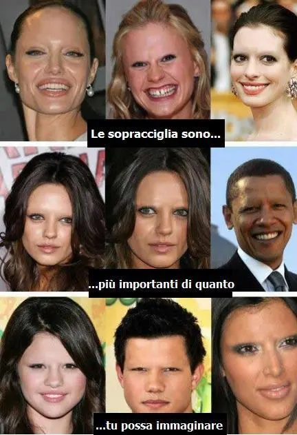
Vediamo infatti nella foto sopra, come una persona cambia completamente aspetto senza sopracciglia. .divenendo così anche un bel bruttini. .
Ma ahimè a molte persone però questa cosa della ricerca della forma ideale è sfuggita di mano, dando vita ad una vera e propria galleria di immagini. .
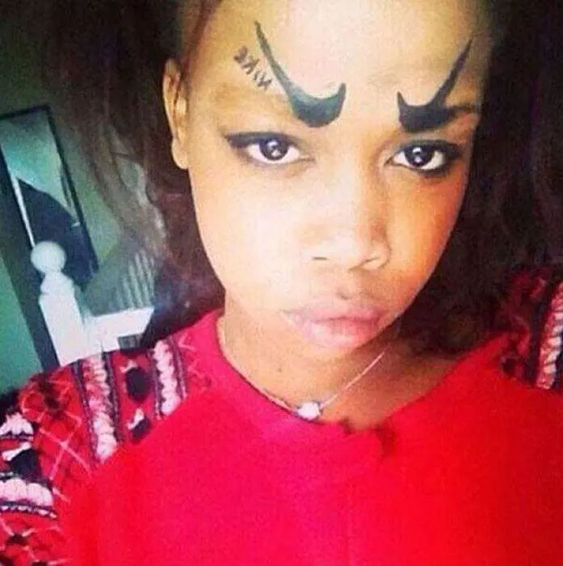
Niente ali di gabbiano, niente forma morbida o altro di 'comune', niente di tutto quello che finora abbiamo visto. .
Forse un make-up sopracciliare malriuscito, molti però vere scelte estetiche e nei peggiori dei casi anche tatuate. .
A voi i giudizi. . . . ⬇
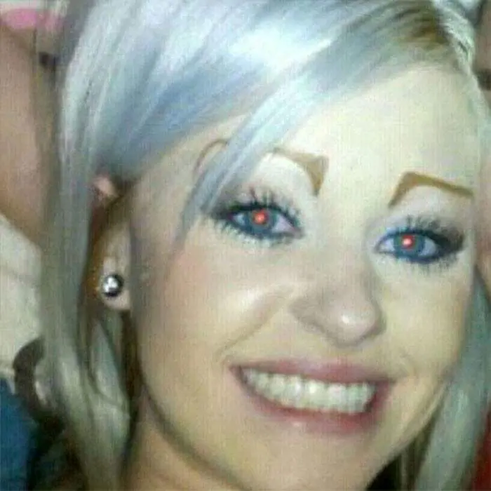
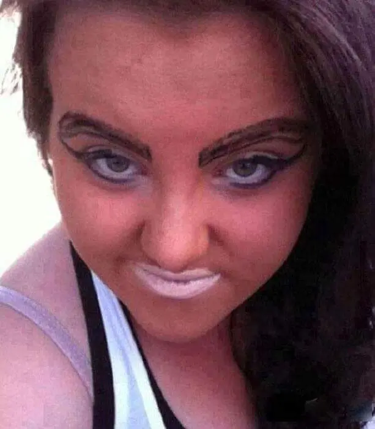
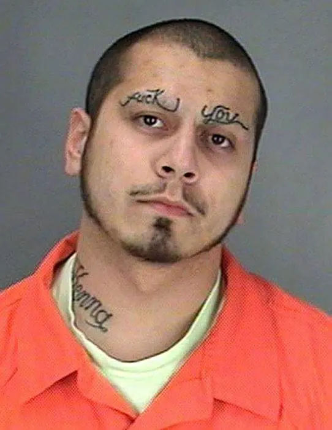
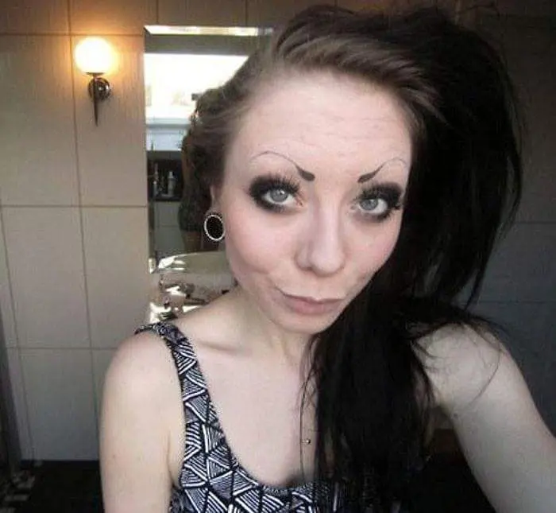
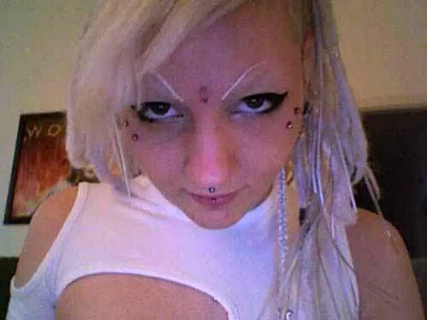
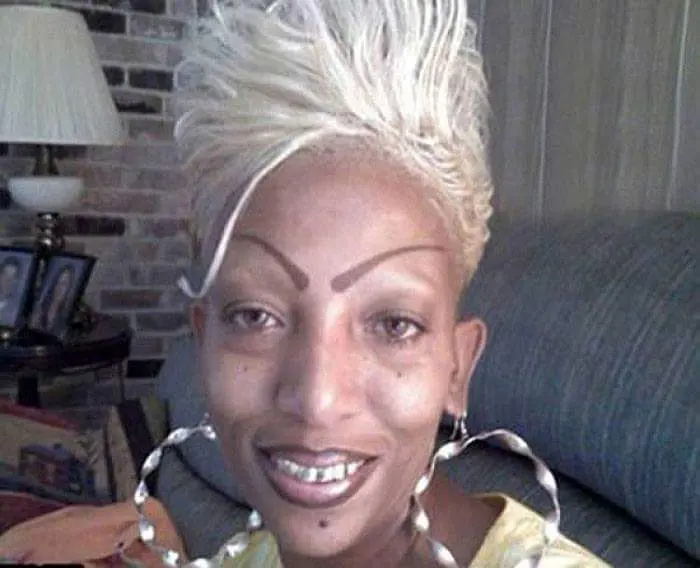
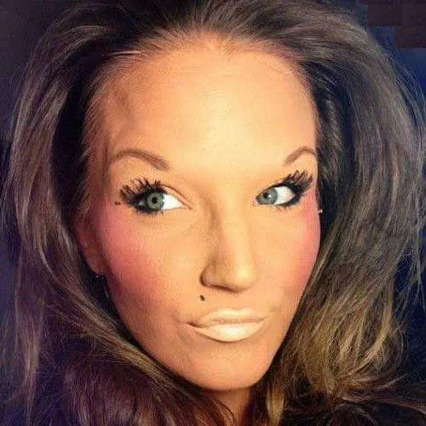
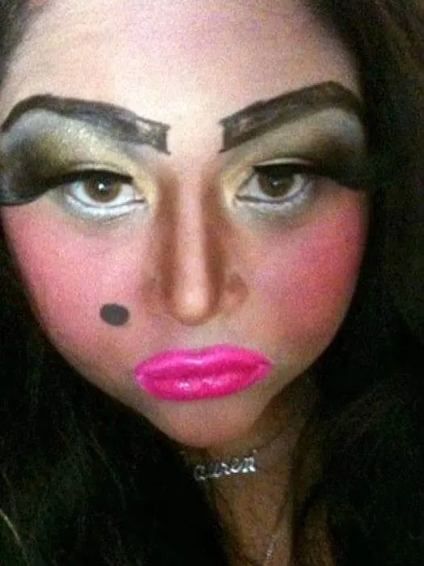
Lei vince anche per un make-up stravagante ed eccessivo. .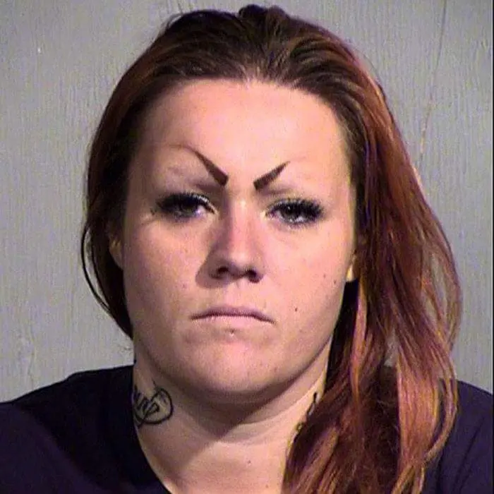
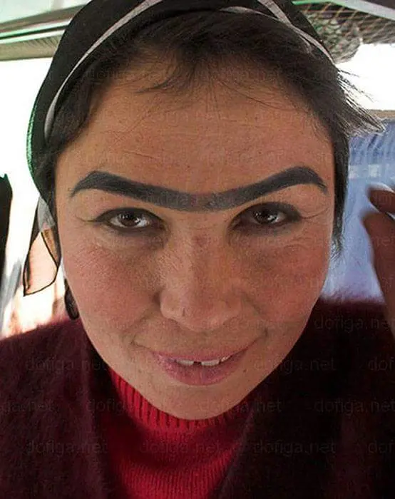
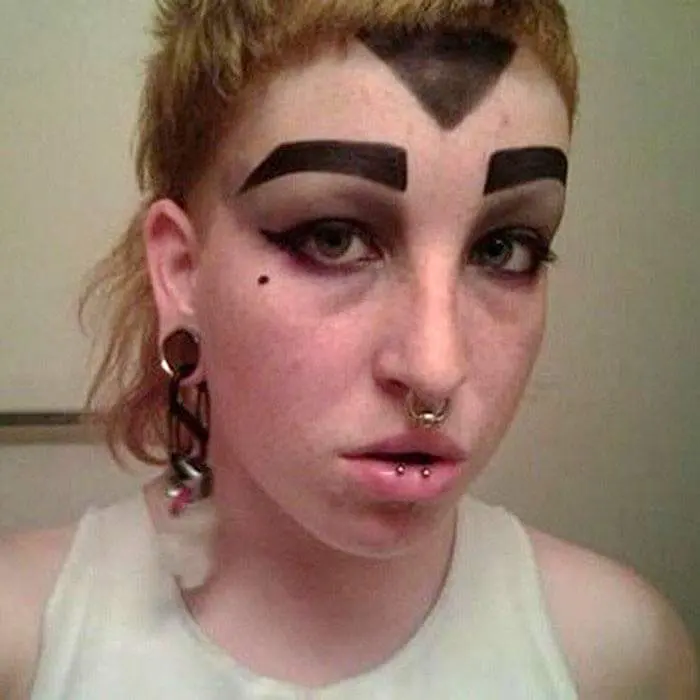
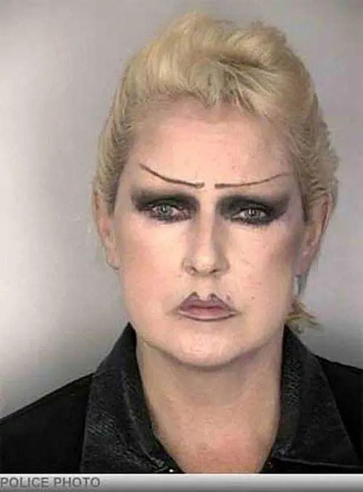
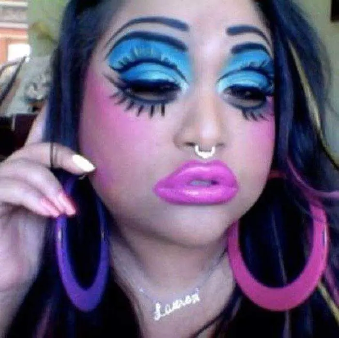
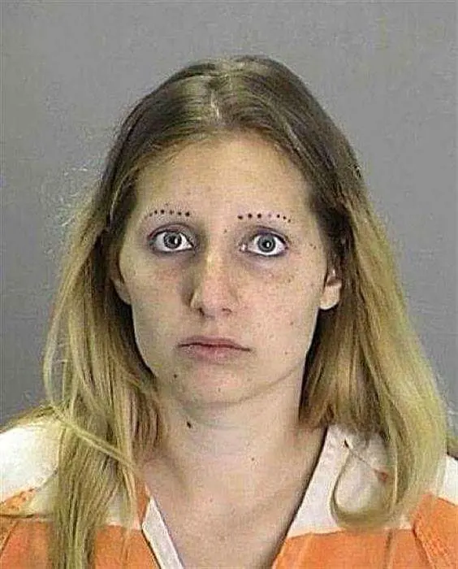
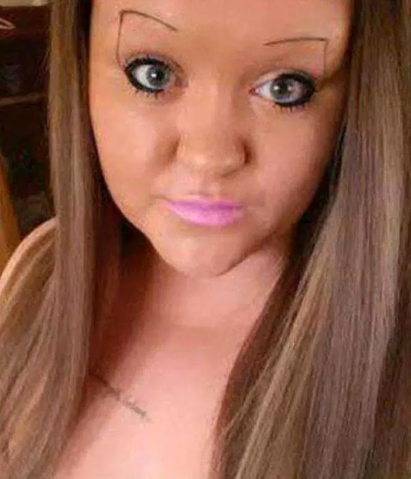
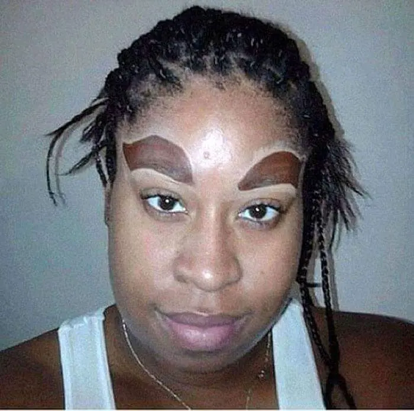
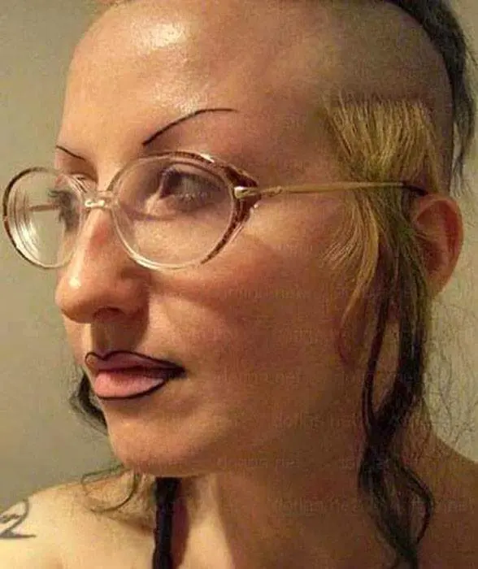
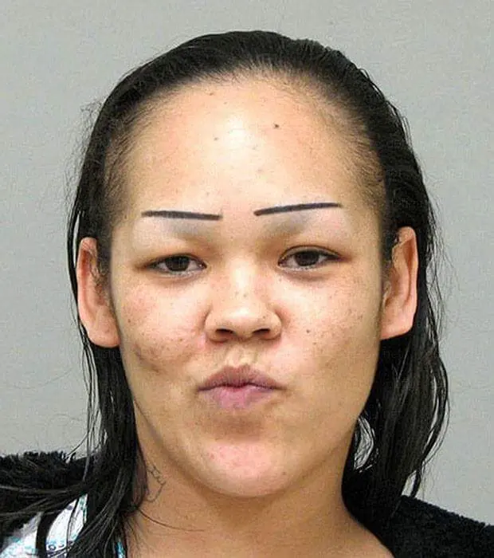
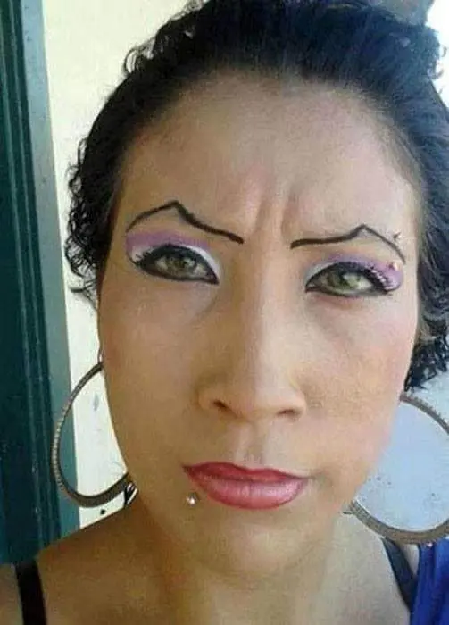
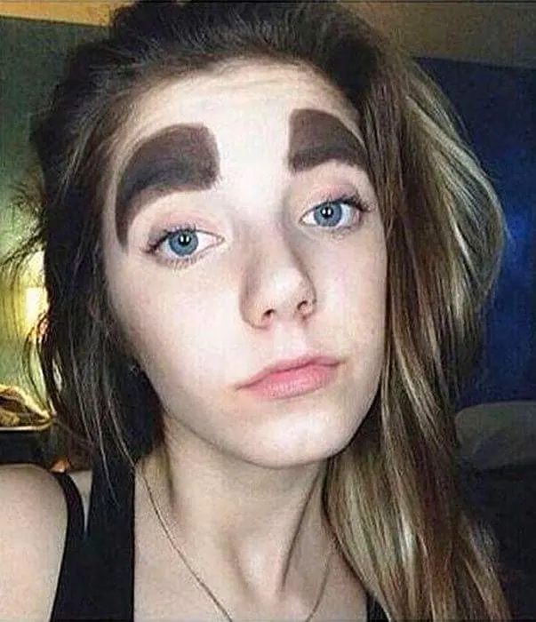
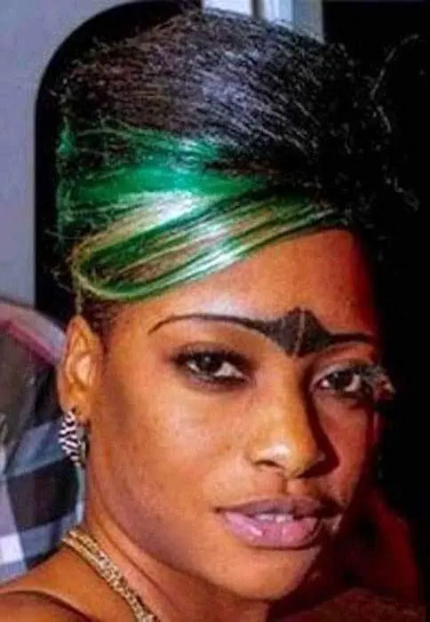
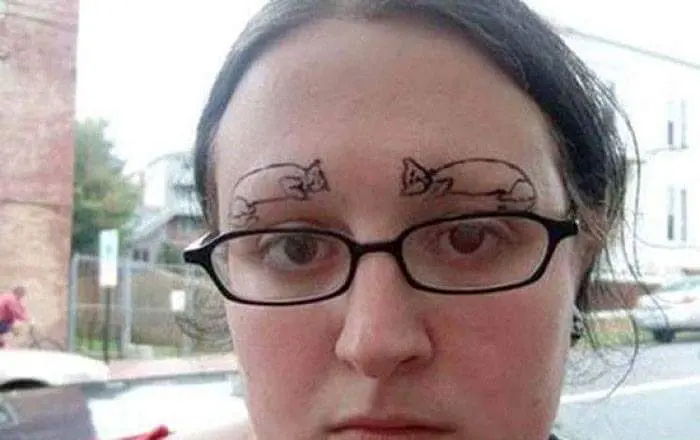
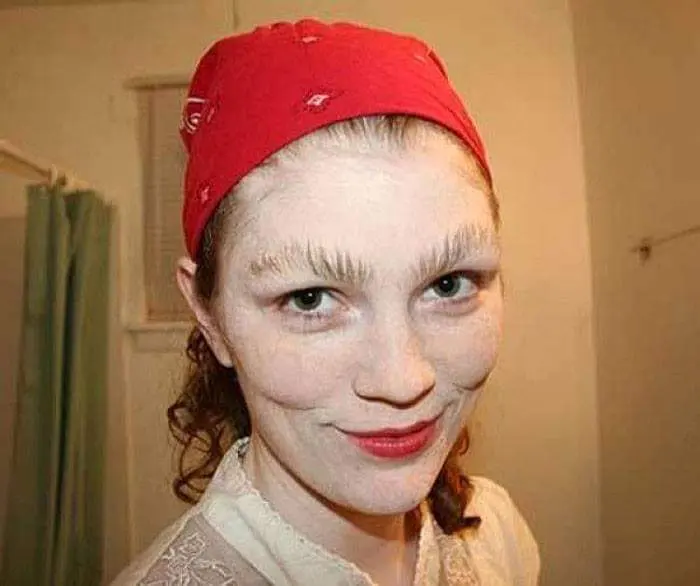
Un pò di sano e buon senso non guasta mai. . ;)